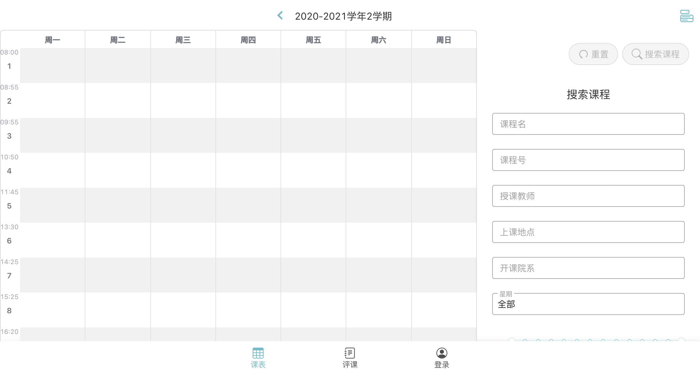

fdxk 后端开发环境配置¶
总览¶
- 简介
- 熟悉terminal
- 工具安装
- 下载代码
- 前端配置
- 后端配置
- 配置成功
- 可能遇到的问题
简介¶
什么是 fdxk.info¶
fdxk.info (Fudan Xuan Ke Info) 是 FDUCSLG（Fudan Unniversity Computer Science Lovers Group）旗下的网站，由复旦大学的计算机相关专业的技术爱好者们开发和维护，旨在解决复旦缺少校内信息交流渠道的问题，目前两大功能为课表、评课，后续会加入更多功能服务校内同学。
目前该项目还处在积极开发之中，如果你对此感兴趣，欢迎联系我们！
关于这篇文章¶
我是 FDUCSLG 的成员李叔禄 @Depetrol，最近加入了 fdxk.info 开发组，在胡志峰学长 @ichn-hu 的指导下安装了 fdxk 的开发环境（不然我可能一周都起不来这个环境hhh），配置完成后写下这篇文章，一方面是以后的开发中可以作为速查，一方面也是方便以后的同学配置开发环境。
熟悉 Terminal¶
本文的系统环境为 MacOS，CPU 架构为 Apple M1，下述过程在你的系统上的结果有可能不同。
terminal 是系统内置的命令行，可以通过向 terminal 中输入命令来操作系统，而这在配置环境中可以为我们提供许多便利，甚至许多操作只能在 terminal 中进行
下面是 terminal 中的一些操作，每输入一行命令后按 enter 来执行命令
在下面的介绍中，标题会介绍命令的基本功能，具体的使用方法需要自己执行下面的命令观察结果
- 目录操作:
lscdpwdrm - 文件操作:
touchcatmvrm - 进程操作:
top显示进程 (htop: 更加便于使用的进程显示，界面更加美观，但需要额外安装brew install htop)
ls 列出当前文件夹下的所有文件和文件夹¶
ls
ls -a
ls -l
ls -h
pwd 显示当前 terminal 所在的目录¶
pwd
cd 进入目录¶
# 进入根目录
cd /
# 进入用户家目录
cd ~
# 回到上层目录
cd ..
cat 显示文件内容¶
cat hello.txt
执行文件¶
./[文件名]
/bin/date
chmod 修改文件权限。¶
如果你希望一个文件有可执行权限：
chmod a+x <file>
clear 清空终端中存在的已经执行过的命令¶
clear
mkdir 在当前目录下创建文件夹¶
mkdir newfolder
touch 在当前目录下创建文件（一般这么创建的文件是文本文件）¶
touch hello.txt
nano 编辑某个文件 ，ctrl+x 退出¶
nano hello.txt
mv、cp 移动文件与复制文件¶
mv hello.txt hi.txt
cp hi.txt newfolder/hi.txt
rm 移除某个文件/文件夹（注意不是移动到废纸篓）¶
rm hi.txt
rm -d newfolder
rm -rf newfolder
管道¶
|: 上一个命令（程序）的输出作为下一个命令的输入
history | grep "mkdir"
工具安装¶
在开始配置 fdxk 的开发环境之前，请先安装以下的开发工具，它们是配置 fdxk 环境所必须的
因为不同系统的安装情况不同，这里不会详细地列出安装的指令，只会进行一些简短的介绍，需要自行上网查找一些资料，如果出现 error 可以先在网上搜索问题来尝试解决（可以搜索 error 的提示内容），可以查看文末的“可能的问题”部分，也可以在文章下方评论来一起讨论
- terminal
- linux 式的命令终端
- linux 发行版一般都自带终端
- windows 上推荐 Windows Terminal + WSL2
- npm、yarn、pip3 (python)
- 因为 fdxk 前后端项目都是用的 typescript 开发，所以需要安装 nodejs 环境
- npm 和 yarn 分别为后端和前端的 nodejs 包管理工具
- 根据不同的操作系统在 terminal 中安装
- 建议安装 nvm 方便管理 nodejs 的版本
- git
- 版本管理工具
- 学习 github flow https://guides.github.com/introduction/flow/
- fdxk 项目都在 github 上托管，采用 github workflow 进行协作
- docker，docker-compose
- docker 是时下非常流行的容器技术，fdxk 的后端服务是 docker 化的，并使用 docker-compose 进行部署
- 容器可以理解为轻量化的虚拟机
- docker 从入门到实践 是非常好的一本参考书
- 安装与系统环境匹配的 docker 版本
- 执行
docker -v检测是否在命令行中安装，并检查版本 - 安装 docker-compose ：
pip3 install docker-compose
- typescript
npm install typescriptnpx tsc -v检测是否安装成功，并检查版本
- nestjs
- fdxk 的后端框架为 nestjs
- 前往官网教程
- https://docs.nestjs.com
下载代码¶
从 GitHub 下载代码¶
- 可以使用 GitHub Desktop → Clone Repository → 保存到目标目录
下载两个仓库¶
- 前端：https://github.com/CLDXiang/today-frontend
- 后端：https://github.com/ichn-hu/today-backend
- 均为 private 仓库，需要权限
前端配置¶
概览¶
fdxk 采用前后端分离的开发方式，前端负责向浏览器传输 html 文件等前端文件，后端专门处理操作请求，如数据的查找、删除等。
前端使用的技术栈为
- PWA
- Vue
- 目前是 Ant Design Vue，正在迁移至利用 TailwindCSS 构建的原生组件库
配置¶
前端使用了 yarn 来配置环境，进入 today-frontend 目录后输入下面的代码，yarn 会读取 package.json 并下载全部的依赖包，并开始运行
yarn (为 yarn install 缩写)
yarn dev
后端配置¶
概览¶
后端使用的技术栈为
- Typescript
- nestjs
- mysql
配置¶
后端的环境配置需要使用 docker 和 docker-compose 。后端会运行三个 docker: api, mysql, redis，而 docker-compose 可以把三个 docker 联合运行，就不用手动启动三次 docker 了
运行以下命令构建 docker-compose
docker-compose -f docker-compose-dev.yml build
运行以下命令以运行 docker-compose
docker-compose -f docker-compose-dev.yml up
输入以下命令显示 docker 正在运行的项目
docker ps
下一步，进入 api 所在的 docker (从上一条命令中查看 today-backend_api 所对应的 container id )
docker exec -it 4cdbb6187be3 /bin/sh
进入容器后，所在目录为 /app，执行以下命令创建配置文件
cp ormconfig.json.example ormconfig.json
最后，执行下面的命令执行 migration
npx typeorm migration:run
配置成功¶
在浏览器中访问 localhost:8080 会得到如下页面

点击底部最右侧登陆选项可以进行注册，获取验证码可以在 mysql 数据库中查看，如果联网能收到邮件验证码
执行以下命令可以看到在后端服务器中的 mysql 数据信息（ [docker_mysql] 需替换）
第一行docker会执行 mysql 虚拟机中 /bin/sh 的虚拟机，也就是 mysql 所在系统的命令行
第二行输入 mysql 的用户名，密码需要手动输入 password
第三行会显示所有的数据库
第四行进入 today 数据库
第五行进入 mail 数据表
第六行显示 mail 数据表，数据表最右面的一列六位数就是验证码
docker exec -it [docker_mysql] /bin/sh
mysql -u root -p
show databases
use today
show tables
select * from mail
可能遇到的问题¶
无法下载问题¶
使用以下命令来查看命令行连接公网的 ip 地址，可以 google 一下 where is + ip 来查看ip所在的位置
curl ip.sb
使用以下命令在命令行中开启代理（127.0.0.1:1087为本地的代理端口，在你的电脑上可能不同）
export http_proxy=http://127.0.0.1:1087;
export https_proxy=http://127.0.0.1:1087;
docker 安装时出现问题¶
错误提示：
failed to solve with frontend dockerfile.v0
可能的解决方案：
export DOCKER_BUILDKIT=0
export COMPOSE_DOCKER_CLI_BUILD=0
Mac M1 不支持 mysql 8.0¶
现在的 docker-compose 中使用的 mysql 镜像暂时还不支持 ARM 架构，因此需要将 mysql: image 项来修改为支持 arm 的 8.0.23 版本
image: "mysql/mysql-server:8.0.23"
后端 mysql 跑不起来，提示 ip 地址没有权限¶
错误信息：
ERROR: Host '172.18.0.1' is not allowed to connect to this MySQL server
解决方法：
CREATE USER 'root'@'%' IDENTIFIED BY 'password';
GRANT ALL PRIVILEGES ON *. * TO 'root'@'%';
其他问题¶
可以在文章下方评论～